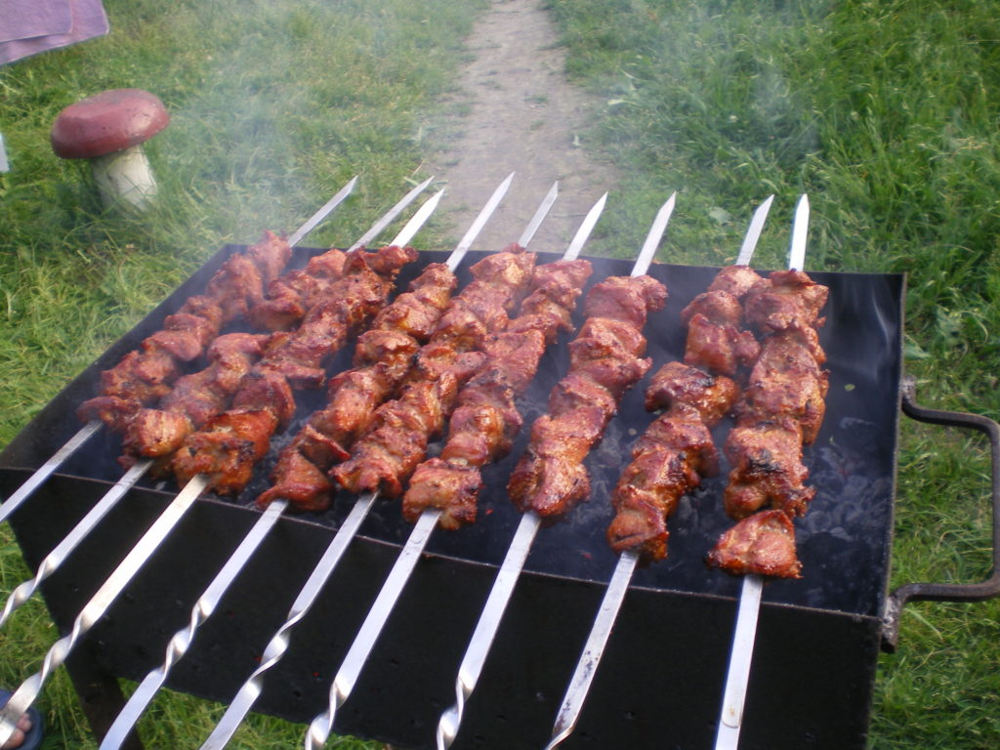

В свободное время я люблю отдыхать на природе и жарить еду на мангале. Я люблю этот процесс — от подготовки мяса до последнего укуса. Секрет вкусного шашлыка, конечно, в хорошем маринаде и правильной жарке. Обычно я мариную мясо с луком, специями и небольшим количеством уксуса или лимонного сока, чтобы оно было сочным и ароматным.
Сам процесс приготовления шашлыков — это тоже своего рода ритуал. Разжигание костра, ожидание, пока угли достигнут нужной температуры, и, наконец, жарка мяса. Этот процесс объединяет и создает неповторимую атмосферу. Вокруг костра всегда собираются друзья и родные, звучат разговоры и смех, и время пролетает незаметно. Когда шашлыки готовы, мы садимся за стол, наслаждаемся вкусной едой и природой вокруг. Это идеальный способ провести выходной день, расслабиться и зарядиться позитивом.
